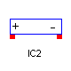
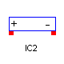

Information
special package
IC symbols: IC1 and IC2
IC symbols specify initial conditions for the bias point.
They substitute the model initialization procedures of the
modeling environment (for instance, Dymola).

Figure 1. IC symbols.
The example in Figure 1 includes
- a one-pin symbol (i.e., IC1) that allows setting the initial condition on a net
for both small-signal and transient bias points, and
- a two-pin symbol (i.e., IC2) that allows setting initial condition between two nets.

Information
IC1 pseudocomponent

Figure 1. IC1 pseudocomponent.
Node
Table 1. Instantiation of Pin class
Table 2. (+) node variables.
| Name |
Description |
| p.vDC |
Static model. |
| p.vTran |
Large-signal voltage |
| p.vAC_Re |
AC small-signal voltage. Real part. |
| p.vAC_Im |
AC small-signal voltage. Imaginary part. |
Parameters
Table 3. IC1 symbol parameters.
| Name |
Description |
| IC |
Value of the initial voltage. |
Variables of interest to the library user
None.
Internal implementation
SPICELib attaches a voltage source with a 0.0002 ohm series
resistance to each net to which the IC symbol is connected (see Figure 2).
The voltages are clamped this way for the entire bias point calculation.

Figure 2. IC1 symbol implementation.
Parameters
| Name | Default | Description |
|---|
| IC | | [V] |
Modelica definition
model IC1
extends src.SPECIAL.IC1;
end IC1;
Information
IC2 pseudocomponent

Figure 1. IC2 pseudocomponent.
Nodes
Table 1. Instantiations of Pin class.
| Name |
Description |
| p |
(+) node |
| n |
(-) node |
Table 2. (+) node variables.
| Name |
Description |
| p.vDC |
Static model. |
| p.vTran |
Large-signal voltage |
| p.vAC_Re |
AC small-signal voltage. Real part. |
| p.vAC_Im |
AC small-signal voltage. Imaginary part. |
Table 3. (-) node variables.
| Name |
Description |
| n.vDC |
Static model. |
| n.vTran |
Large-signal voltage |
| n.vAC_Re |
AC small-signal voltage. Real part. |
| n.vAC_Im |
AC small-signal voltage. Imaginary part. |
Parameters
Table 3. IC2 symbol parameters.
| Name |
Description |
| IC |
Value of the initial voltage between two nodes. |
Variables of interest to the library user
None.
Internal implementation
SPICELib attaches a voltage source with a 0.0002 ohm series
resistance between the two nets to which the IC symbol is connected.
The voltages are clamped this way for the entire bias point calculation.

Figure 2. IC2 symbol implementation.
Parameters
| Name | Default | Description |
|---|
| IC | | [V] |
Modelica definition
model IC2
extends src.SPECIAL.IC2;
end IC2;
HTML-documentation generated by Dymola Tue Oct 14 18:26:30 2003
.